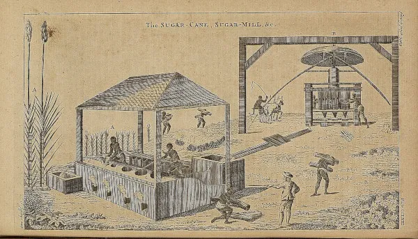
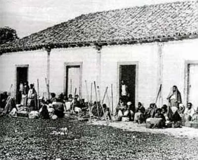
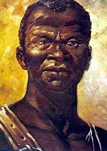
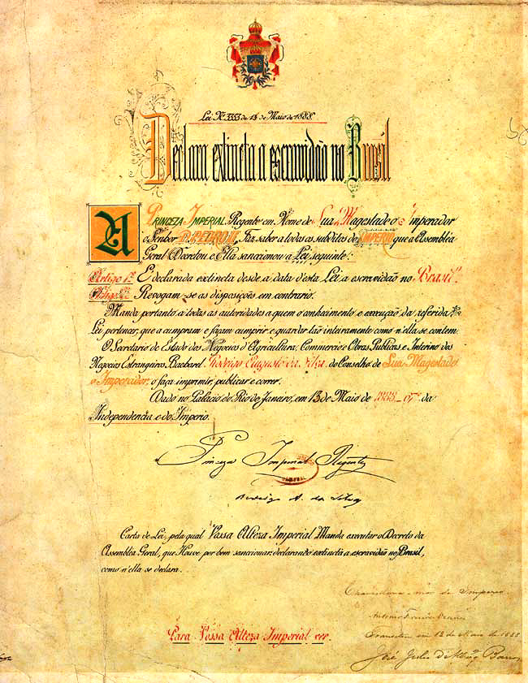
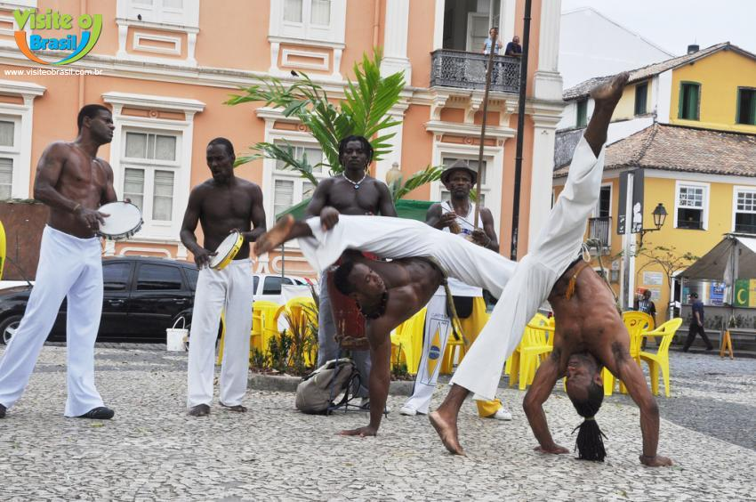

A escravização no Brasil começou na década de 1530 com a exploração dos povos originários, chamados na época de "negros da terra". Eles foram utilizados principalmente na extração do pau-brasil e nas primeiras lavouras de cana-de-açúcar.
Com a expansão da economia açucareira e o crescimento do tráfico transatlântico de pessoas escravizadas, a Coroa Portuguesa passou a intensificar a importação de africanos para trabalhar na colônia.

Diferente do mito de uma "escravidão branda", o sistema escravista era fundamentado na violência, na exploração e na desumanização das pessoas escravizadas.

As pessoas escravizadas enfrentavam jornadas de trabalho exaustivas, alimentação precária e moradias insalubres. Em determinados períodos, a expectativa de vida sob o regime escravista era estimada em cerca de 18 anos.
Para manter a disciplina e impedir fugas ou revoltas, eram utilizados diversos castigos físicos.

Africanos e indígenas nunca foram vítimas passivas. Eles foram agentes ativos na luta por sua liberdade, preservando suas culturas e organizando diversas formas de resistência contra o sistema escravista.
O maior símbolo dessa resistência foi Zumbi dos Palmares, líder do Quilombo dos Palmares e importante personagem da luta pela liberdade no Brasil.
A formação de comunidades de fugitivos, conhecidas como quilombos, foi uma das formas mais importantes de resistência coletiva. O Quilombo dos Palmares tornou-se símbolo da luta contra a escravização.
A abolição da escravidão no Brasil foi um processo lento e gradual, impulsionado por pressões internacionais, especialmente da Inglaterra, pelo fortalecimento do movimento abolicionista e pela resistência dos próprios escravizados.

Em 13 de maio de 1888, foi sancionada a Lei Áurea, extinguindo oficialmente a escravidão no Brasil. Com isso, o Brasil tornou-se o último país das Américas a abolir juridicamente a escravidão.
A abolição da escravidão não foi acompanhada por políticas públicas que garantissem acesso à terra, educação, moradia e trabalho digno para a população liberta.
Após a abolição, grande parte da população negra permaneceu excluída da economia formal, enfrentando preconceito e desigualdade social.

O legado da escravidão permanece presente na sociedade brasileira por meio das desigualdades sociais, econômicas e raciais, influenciando o acesso à educação, saúde, emprego e oportunidades.
Durante a escravidão, seres humanos foram tratados como propriedade legal, processo conhecido como "coisificação". Essa realidade deixou marcas profundas que permanecem na memória coletiva e na estrutura social do Brasil.
| Período | Evento | Categoria | Importância |
|---|---|---|---|
| 1500 | Chegada dos portugueses ao Brasil. | Colonização | Início da ocupação portuguesa. |
| 1530 | Início da colonização efetiva e expansão da produção de açúcar. | Aumento da necessidade de mão de obra. | |
| 1695 | Morte de Zumbi dos Palmares. | Resistência | Marco da luta dos quilombos. |
| 1888 | Assinatura da Lei Áurea. | Abolição | Fim legal da escravidão no Brasil. |
| Curiosidade: A resistência ocorreu de diversas formas, incluindo quilombos, revoltas, preservação das tradições africanas e manifestações culturais como a capoeira. | |||
Sua opinião é muito importante. Comentários, sugestões e críticas ajudam a melhorar este projeto.